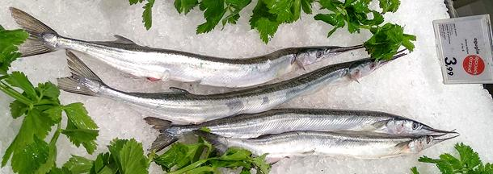

Garfish

[Garfish (USA, UK); Garpike (UK); Needle fish (Scotland); Hornfisk (Denmark);
Horngjel (Norway); Horngädda (Sweden); Hornfisch (Germany); Nokkakala
(Finland); Belona (Poland); Agulha (Portugal); Agulla (Spain); Anguillo
(France); Aguglia; (Italy); Zargana (Greece, Turkey);
Belone belone]
This long, very slender fish is most plentiful in the northeast Atlantic and
Baltic Sea, but is found from the coast of Morocco, through the Mediterranean
and Black Sea, and can be found as far west as Iceland. In the Mediterranean
it is most common from the east coast of Spain, around Italy and through the
Greek islands. They can grow to nearly 41 inches (104 cm) and 3 pounds (1.4 kg)
but are usually about 18 inches (45 cm). These fish are a modern fish and
totally unrelated to the ancient
American Gars. IUCN Red List LC (Least Concern).
Photo by Assianir distributed under license Creative Commons
Attribution-ShareAlike v4.0 International.
More on Varieties of Fish
(very large page).
Cooking:
These fish can be fried, grilled, baked, smoked,
or filleted and included in fish soups and stews. They are cooked skin-on
in all cases. The bones of this fish are green, which discourages some people
from eating them, but the color is harmless and does not indicate spoilage.
Buying:
These fish are unavailable in the Americas or Asia
east of the Mediterranean. In Denmark, where they are very popular, they are
available in spring and again in early autumn. This may be similar in other
regions. The photo shows them for sale on ice in Italy.
sf_garfshz 211128 - www.clovegarden.com
©Andrew Grygus - agryg@clovegarden.com - Linking to
and non-commercial use of this page permitted. All photos not otherwise
credited are © cg1